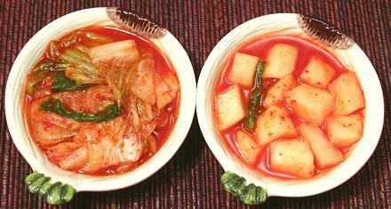
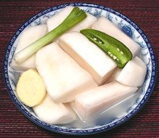

Kimchi / Kimchee

Absolutely indispensable at any Korean meal, this is a salt fermented
vegetable pickle made in Korea, Manchuria, and northern China since
ancient times. Napa cabbage (actually a turnip green) and Radish (daikon)
are most common, but there must be hundreds of distinct recipes that include
many different vegetables and seafood. I have one cookbook that has 72 recipes
for different kinds of Kimchi. The photo shows cabbage kimchi
on the left and radish on the right. Typically, Kimchi is bright red, but
pretty mild by Southern California standards - though folks from the
Frozen North may disagree.
Officially, in 1966 at a food science convention in Poland, the English
spelling was standardized as "Kimchee". Here in Los Angeles, where kimchi
production is measured in tons per day (and I don't mean just a few), that
spelling is totally ignored in favor of "Kimchi". All the best cookbooks
printed in English (or Korean) use "Kimchi".
More on Cabbage Pickles.

While kimchi has been made for perhaps 3000 years, and from many vegetable
mixes, the biggest change came in the early 1700s when chili peppers brought
to Asia by the Dutch and Portuguese became incorporated into the mix. Today
most people just presume that kimchi has plenty of red chili in it, but
white kimchis are still made. The photo to the left shows a white radish
kimchi which is quite popular here in Southern California.
Cabbage kimchi is the most popular, and my favorite, with daikon radish
second. The cabbage may be chopped coarsely as shown in the photo - or the
jar may just be stuffed with a couple whole cabbages. The cabbages used are
of the same sort as our Napa Cabbage, but an elongated cultivar is selected,
particularly for "whole cabbage kimchi". See also
Trivia.
Buying:
Some pretty dismal kimchi is sold in small jars
in non-Korean stores. Excellent kimchi can be had in just about any
Korean market, at least here in Los Angeles. Always buy from refrigerated
cases - if it's not refrigerated it must be pasteurized (spelled
"r u i n e d"). It's best to buy in 1/2 gallon or larger jars if you can
eat that much, but if you buy smaller jars buy a brand the store is also
selling in 1/2 gallon and 1 gallon sizes. If they're selling it in jars
that large they must have customers who really like it.
Vegetarian Note:
While kimchi is nearly all vegetable,
most formulas contain a small amount of oysters, shrimp or fish sauce
(made from anchovies) so if you're really, really strict and would be
devastated to know you consumed some seafood, read the ingredients list
carefully (or don't read the list and claim ignorance - a better
strategy, actually - it's called "don't ask, don't tell"). MSG is not
included in the kimchis made around here.
Storage:
Kimchi is a live culture, so it will change and
eventually spoil if mistreated. It is best kept refrigerated and consumed
within a week.
Cooking:
Kimchi is generally served as a side dish or
condiment (a Korean table will have several small dishes along with the
main dish). In some cooked dishes, particularly with soups and stews,
kimchi is used as a major ingredient - just follow the recipe.
Trivia
While these designations are pretty much
irrelevant here in North America, there is a set of designations in Korea for
different fermentations of Napa Cabbage, and probably other Kimchis.
- Geotjeori: Fresh, unfermented Kimchi. This is much like
a salad and the cabbage is bright white.
- Kimchi: This is the fermented Kimchi that we know and love
here in North America.
- Shin Kimchi: This is Kimchi that has been over-fermented.
It is more acidic, and is often used in cooked dishes that use Kimchi as
a major flavoring. Making these with regular Kimchi, we add more of the
juice from the jar.
- Mugeungi: This is the product made in buried crocks for
use in the winter. It is slowly fermented at very low temperatures for at
least 6 months, when it will be very pungent.
cb_kimchiz 101224 - www.clovegarden.com
©Andrew Grygus - agryg@clovegarden.com - Photos
on this page not otherwise credited © cg1
- Linking to and non-commercial use of this page permitted